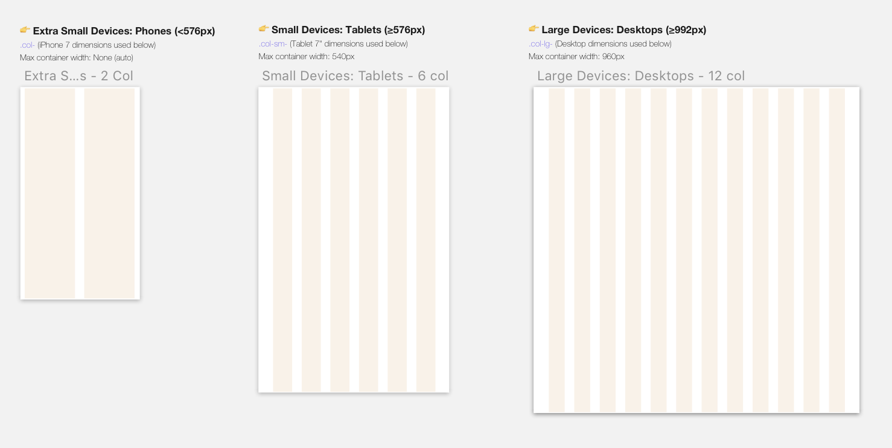

Project Background
Penny Juice Website Redesign is a high fidelity wireframe project for the course Interactive Design I, in which we were to assess the current design of a webpage, and apply the 5 Planes of UX into the redesign wireframe.
Applying the 5 Planes of UX
The original Penny Juice website for reference.
Surface
- Blinding neon colors, clashing colors.
- Order Now and Learn More buttons are colored red.
- Buttons flash from red to green.
- Stock photos present an uncomfortable, uninviting feeling.
- Very different styles of stock images, lacking cohesiveness.
- Text hierarchy is not consistent.
- No asterisks or any indication of required fields to make a purchase.
- Intended audience may be childcare managements and preschools.
- Website has a very odd style, and some may even associate this type of branding with scam or viruses.
Skeleton
+ The focus is on the different flavors of juice concentration offered.
+ Navigation bar is accessible even as you scroll down the page.
+ "Order Now" button allows easy access to the purchase page.
- Extraneous "Learn More" buttons which redirect the user to the Childcare Juice page.
- Body content is not particularly organized.
- Credibility as a business is hidden on a different page.
+ There is a vertical grid flow.
+ Navigation bar > Body content > Social media.
Structure
- It is hard to find information on pricing and restrictions (ex: minimum 1 case order).
+ Users can Submit Order after filling out the form.
- However, there is a very small "Buy Now" button prompted after checkout.
Users navigate the site by:
- Scrolling vertically through the site.
- Clicking on buttons that prompt users to Order Now or Learn More.
- Clicking on the three links on the navbar.
- Clicking logo redirects you to the home page.
Scope
- The page is for users to learn more about Penny Juice, and purchase juice concentrates in bulk.
The functional requirements include:
- Billing/Shipping form.
- Credit/Debit card as a form of payment
Strategy
Business Goals include:
- Selling easy-to-make juice concentrates in bulk to organizations that care for children, such as childcare orgs.
- Bringing experience from the beverage industry to enjoyable products for children.
Scenarios of usage:
- On the current scale, this site is more targetable for larger childcare orgs who need supplies of juice for kids.
- With a redesign of the strategy for Penny Juice, it could incorporate for any large events that serve juice, even on a family birthday party style event.
Brainstorming and Sketching
Dissecting the 5 Planes of UX was extremely helpful in identifying some of the strong and weak points of the existing website. The hierachy and flow of the three pages, as well as the buttons on the splash page, made it difficult for the user to find information about the service. Going into the redesigning process, I wanted to change the visual branding of the page (colors, type, photos, icons) into a more consistent one, and rearrange information flow by grouping relevant information together.
This is a quick sketch of pulling out the important information, and visualizing the redesign.
Juice Icons
Wireframing in Sketch
Using a Sketch Kit
The assignment called for us to download the Bootstrap Grid Kit for Sketch, which lays out vertical columns for varying screen sizes. Here are the three we were required to design for.
Low-Fidelity
Splash page

Order Now page
High-Fidelity
Splash page
Order Now page
Final Takeaways
This is my first project fully using Sketch to build all six wireframes, with the help of the Bootstrap Grid kit. The bottle icons and brand logo was created in Illustrator and imported into Sketch. This was also my first time fully applying responsive and adaptive design to three different screen sizes. Although I started with the site design on the desktop 12 col. grid, I made sure to design with a mobile-layout approach for easy transition over to smaller screen sizes.
The style reminds me a lot of Twitter Bootstrap sites, because of its easy, responsive layout, long, horizontal sections, and buttons. In future projects, I want to challenge myself in intentionally designing with a different visual approach.
Learning Axure
After the assignment, I downloaded Axure and explored some of its prototyping features, such as adding hotspots and mouse hover state. In order to bring in wireframes from Sketch, I had to copy the contents as SVG before pasting them into Axure.